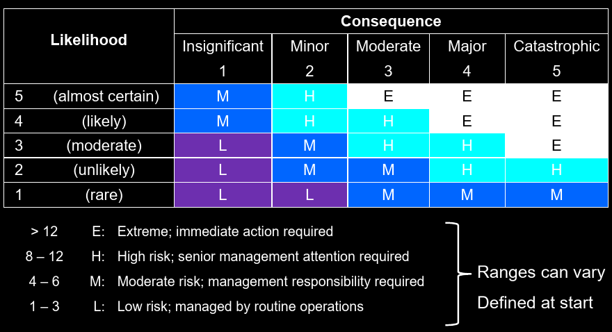
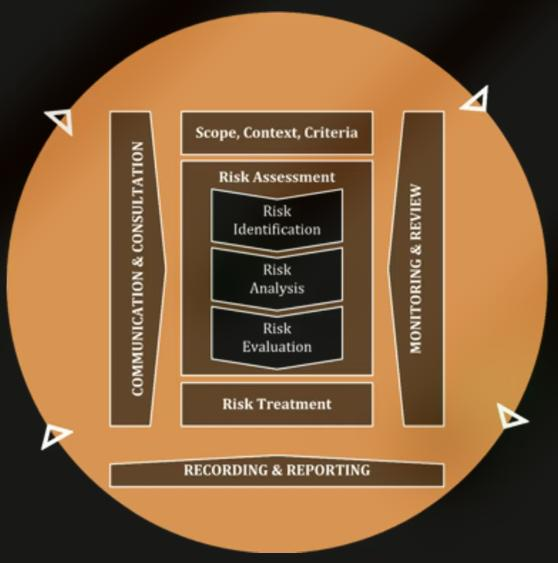
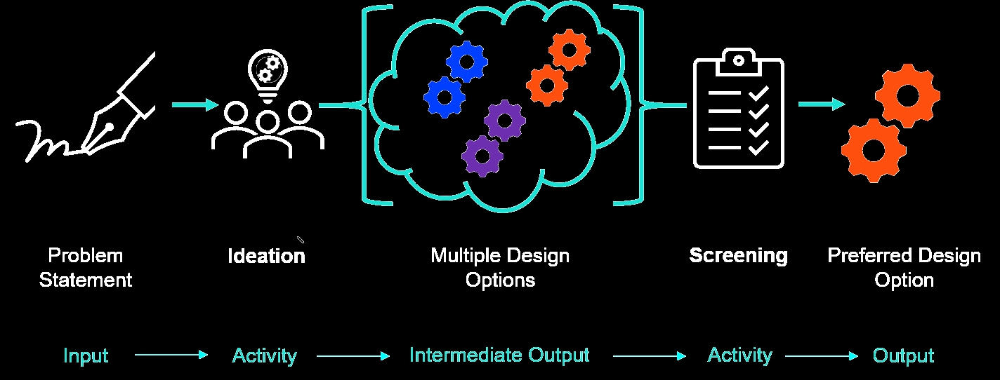

Appreciates the principles of safety engineering, risk management and the health and safety responsibilities of the professional engineers including legislative requirements appicalble to the engineering discipline
Risk “The effect of uncertainty on Objectives”Likelihood: “The chance of something happening”Consequences: “The outcome of an event affecting objectives”Controls: “A measure that maintains and/or modifies risk”AvoidRemoveMitigateTransferAcceptIncreaaseRisk Management can be defined as “coordinated activities to direct and control an organisation with regard to risk”.


Risk management is time consuming and can be perceived to get in the way of progress and so might even be ignored * This behaviour touches on being unethical which is the focus of a future topic * One approach is to embrace failure, and report on it as a learning opportunity for yourself and others

The start of the conceptual design marks a transition in the direction of the engineering project. Now the objective is to solve that defined problem * Specifically, the output from the conceptual design is a preferred option * Conceptual design stage which can be broken into two sub-stages * Ideation - The development of a range of suitable design options using divergent thinking * Screening - The selection of the best design option using convergent thinking
[!WARNING] Even though you might think that these ideas won’t be viable that not a concern just now, you will be able to
screenout the worst ideas in the next sub-phrase
Brainstorming is a good tool for generating ideas when working in teams. To complete a brainstorming activity * Make sure you have the same working space (make sure you have your design problem statement written somewhere to see) * Spend 5 minutes individually coming up with as many ideas as you can that would solve that problem * Then collate these ideas together in a central space. => Now group these ideas together and have individuals further explain their ideas * After this individual phase open up idea generation to the whole group. * Adding a new idea to an existing one * Keep going even if you think your idea might be not feasible, someone else might be inspired and add their own idea * At the end of this process you should have a page convened in ideas
Another way to build on the ideas of your is through a yes and tool * Get set up with everyone in your design team in the same working space and your design statement written somewhere to see * Individually take a blank piece of paper and write down a single idea to answer the design statement * When you have finished pass the idea to the group member to your left and receive an idea from the group member to your right * Looking at the new idea in front of you add in a suggestion for how this idea could be improved or otherwise build on the idea. To help start your statement with yes and * Repeat the above two steps passing around the ideas and adding onto them until you receive your original ideas * Take it in turn around the design teams to read out the chain of ideas * At the end of this process you should have several developed ideas
Generating an entirely new idea from scratch can be difficult. Using already existing ideas and solutions can with the SCAMPER tool can be very helpful
The tool “8 field of MATCEMIB” is great to increases the number of creative ideas generated by students. To use the tool simply ask yourself “could[Field] help in the meeting design requirement”; where [FIELD] is one of the following * Mechanical * Acoustic * Thermal * Chemical * Electrical * Magnetic * Intermolecular * Biological
In design, the critically thinking engineer will constantly review the context and methods that are being used in the project and make adjustment as necessary. The constant battle between creativity and conformity, the engineer must be able to navigate and satisfy both
critical thinking is important in problem definingcreaticity is important is problem solvingIdeal Ultimate Result - a method which aids the designer establish the direction for the system under consideration and also engages the designed in re-framing the situation
Level of development (LOD) is and idea of how much detail you need to go into during the conceptual design stage. Consider there 3 basics LOD
Concpetual design stage - perfectly normal to just be at the lowest level of development, we don’t need more details and we can make estimates of the expected outcomesPreliminary design stage - you will need to start adding more details into the design and you might use functional analysis to the determine the sub functionFinal design stage - The is a much higher level of development and ultimately at this stage there is enough information that someone could manufacture that part. You would also know the precise cost and weight etc